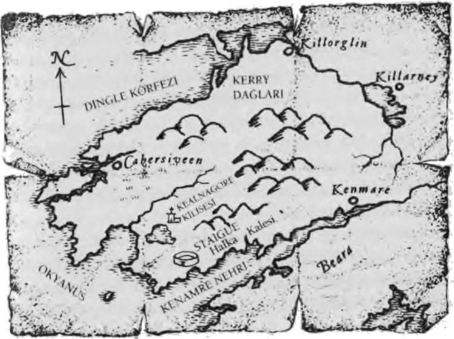

ZİYARETÇİ
Mutfağa inip sodalı ekmek ve jambonla hafif bir akşam yemeği yedik. Yemekten sonra Hayalet tabağını itip boğazını temizledi.
"Evet kızım, bana ne yaptığını anlat."
"Hizmetlinin ruhu kara bir 'zor büyüsü'yle bağlanmıştı," dedi Alice. "Bu handa kapana kısılmıştı ve onu duyabilecek kadar yaklaşan herkesi çıldırtacak bir 'şaşkınlık büyüsü' yapmaya zorlanıyordu. Bu büyü insanları öyle korkutuyor ki kurtulabilmek için her şeyi yapabiliyorlar."
"Peki, sen tam olarak ne yaptın?" diye sordu Hayalet sabırsızlanarak. "Hiçbir şeyi atlama!"
"Kemikli Lizzie'nin bana bir zamanlar öğrettiklerini kullandım," diye yanıtladı Alice. "Ölüleri kontrol etme konusunda çok iyiydi. Onlardan istediğini bir kez aldıktan sonra -fazla direnmedikleri takdirde- gitmelerine izin veriyordu. Onları serbest bırakmak için başka bir büyü yapıyordu. Bu büyünün adıysa avaunt; eski dilde 'gitmek' anlamına gelir."
"Yani tüm uyarılarıma rağmen yine kara büyü kullandın!"
"Başka ne yapmalıydım?" dedi Alice, öfke içinde sesini yükselterek. "Tuz ve demir işe yaramayacaktı! Zaten Karanlık'a ait olan bir yaratık değil de zavallı bir kızın işkence gören ruhu söz konusuyken tuzla demir ne işe yarar ki? Başımıza kurtulamayacağımız bir bela sarmak üzereydik. Ben de yapmam gerekeni yaptım."
"İyi de oldu," diyerek Alice'i destekledim. "Kızın ruhu Aydınlık'a gitti ve han yeniden güvenli bir yer oldu."
Hayalet endişeli görünüyordu fakat söyleyecek fazla bir şeyi yoktu. Ne de olsa kan kabını tutmamıza izin vererek ilkelerinden ödün vermişti. Hayalet'in sessizliğinin kendisine yöneltildiğini hisseden Alice ayağa kalkıp kızgın bir şekilde odasına çıktı.
Ustama baktım; gözlerindeki acı ve sıkıntıyı görünce kendimi üzgün hissettim. Geçtiğimiz iki yıl içinde bu şekilde kara büyü kullanılması nedeniyle aramıza yavaş yavaş bir soğukluk girmişti. Kendimi affettirmem gerekiyordu fakat ne söylemem gerektiğini bilmiyordum.
"En azından umacıyı alt ettik," dedim. "Sanırım bunu defterime yazacağım."
"İyi fikir evlat," dedi Hayalet yüzü biraz aydınlanarak.
Ben de Yaratıklar Kitabı'na yeni bir giriş yapacağım. Her ne olursa olsun kaydedip bir ders çıkarmalıyız."
Böylece ben olanları kendi defterime yazarken Hayalet de çantasından Yaratıklar Kitabı'nı, Chipenden'de yanan evi ve kütüphanesinden geriye kalan tek kitabı, çıkardı. Bir süre ikimiz de sessizce yazdık ve tesadüfen aynı anda bitirdik.
"Savaş bitip de Chipenden'e dönebildiğimizde çok mutlu olacağım," dedim. "Normal hayatımıza dönmek harika olmaz mıydı?"
"Evet evlat, olurdu. Eyalet sahiden gözümde tütüyor ve evimi yeniden inşa etmek için sabırsızlanıyorum."
"Öcü yokken eskisi gibi olmayacak, öyle değil mi?" diye sordum.
Öcü, evin çoğu zaman görünmeyen, ara sıraysa kızıl renkli iri yarı bir kedi olarak görünen sakiniydi. Hayalet'e çok iyi hizmet etmiş, eviyle bahçesini yıllarca korumuştu. Ev yanıp da çatısı çöktüğünde ustamla öcünün arasındaki anlaşma da sona ermişti. Öcü artık istediği yere gitmekte özgürdü.
"Kesinlikle olmayacak. Kendi yemeğimizi kendimiz pişirmemiz gerekecek, temizliği de biz yapacağız ve kahvaltıları sen hazırlayacaksın. Zavallı yaşlı midem buna biraz zor katlanacak," dedi Hayalet belli belirsiz gülümseyerek. Kötü aşçılığımla hep dalga geçerdi ve bir kez daha bu konuda espri yapmaya çalıştığını görmek güzeldi.
Biraz daha neşeli görünüyordu ve çok geçmeden odalarımıza çekildik. Eski hayatımızı özlüyor ve bir daha o hayata geri dönüp dönemeyeceğimizi düşünüyordum.
Ancak gecenin dehşeti henüz bitmemişti. Odama dönünce korkunç bir şeyle karşılaştım.
Sol elimi arka cebime atar atmaz, düştüğümde bana neyin o kadar acı verdiğini anladım: kan kabı.
Yoksa zarar mı görmüştü? Kendimi çok kötü hissettim. Titreyen ellerle küçük kabı cebimden çıkarıp mumun yanına götürerek inceledim. Korkudan titriyordum. Kabın neredeyse yarısı boyunca uzanan bir çatlak vardı. Acaba kap artık tehlikede mi? diye düşündüm.
Panikle Alice'in hemen yandaki odasına koşup kapıyı çaldım. Kapı açılınca ona kabı gösterdim. Önce o da paniğe kapılmış gibi göründüyse de kabı yakından inceleyince rahatlatıcı bir şekilde gülümsedi.
"İyi görünüyor Tom, sadece incecik bir çatlak. Kanlarımız hâlâ içinde, yani Şeytan'dan korunuyoruz. Bunlar sert kaplardır ve kolay kolay kırılmaz. Hâlâ iyiyiz, endişelenmene gerek yok."
Bu kadar ucuz kurtulduğumuz için rahatlayarak odama döndüm.
Çok geçmeden kentte umacıları alt edebilen bir hayaletin olduğuna dair dedikodular yayılmaya başladı.
Böylelikle başarımızın meyvelerini yerken -handa bir hafta konaklama- bir yandan da yardımımızı isteyen başkaları tarafından ziyaret ediliyorduk.
Hayalet Alice'le bir daha çalışmayı reddediyordu, ama istemeye istemeye de olsa bana izin verdi. Böylece ilk çalışmadan sonraki gece Alice'le birlikte bir saatçinin çalışma odasına musallat olan umacıyı defetmek üzere yola koyulduk. Adam borca girip bir gece çok fazla şarap içtikten sonra kendini öldürmüştü. Yakınlarının dükkânı satması gerekiyordu, fakat umacı varken bu mümkün değildi.
Bu karşılaşma da neredeyse handakiyle aynıydı. Ritmik seslerden sonra bir ışık sütunu belirdi ve ruh ölümcül çalışmasına başladı. Fakat daha henüz yenice mırıldanmaya başlamışken Alice ona karşı bir büyü yaptı. Alice onun sesini kesmekte benden daha başarılıydı, çünkü saatçinin ruhunu Aydınlık'a ulaştırmak için üç deneme yapmam gerekti. Hiç kolay değildi: Zorlu bir hayatı olmuş, sürekli para hesabı yapmış ve parasını kaybetme korkusu yaşamıştı. Üzerinde çalışabileceğim pek fazla mutlu anısı yoktu. Ama en sonunda başardım ve ruhunu serbest bıraktım.
Ancak sonrasında umutsuzluğa sürüklendiğim bir olay gerçekleşti. Tezgâhın hemen yanında bir parıltı gördüm ve gri renkli yeni bir ışık sütunu belirdi. Görünüşe bakılırsa başka bir ruh daha bize katılmıştı. Ve sütunun tepesinden bir çift göz, öfke içinde bana bakıyordu. Gözlerden biri yeşil, diğeri maviydi; fırtına bulutunun içinde gördüklerime benziyorlardı. Paniğe kapılarak geriledim.
Hemen ardından ışık sütunu parıldadı ve önümüzde bir kadın belirdi. Cismen orada değildi - şeffaftı ve arkasındaki tezgâhın üzerinde duran mumu hâlâ görebiliyordum; görüntüsü başka bir yerden buraya yansıtılıyor olmalıydı. Aniden bu yüzün kime ait olduğunu hatırladım. Bill Arkwright'ın öldürdüğü cadıydı.
Bir kez daha bakınca bunun, defalarca gördüğüm kâbustaki cadı olduğunu ürpertiyle fark ettim.
"Umarım fırtınamdan hoşlanmışsındır!" diye bağırırken tuhaf gözlerinde kötücül bir bakış belirdi. "Seni oracıkta boğabilirdim ama bu zevki daha sonraya saklıyorum. Aklımda başka şeyler var! Seni bekliyordum evlat! Etrafta haklanması gereken umacılar olunca ortaya çıkacağını biliyordum. Onları nasıl buldun? Uzun yıllardır yaptığım en harika büyü bu."
Yanıt vermedim ve cadının gözleri Alice'e kaydı. "Ve bu da Alice. İkinizi epeydir izliyordum. Nasıl iyi dost olduğunuzu gördüm. Yakında ikinizi de avucumun içine alacağım."
Öfkelenerek öne çıkıp Alice'le cadının arasına girdim.
Pis pis sırıttı. "Ah, demek kızı kolluyorsun! Bunun için teşekkürler evlat. Kuşkularımı doğruladın. Artık sana acı vermek için bir yöntemim daha var. Ve sana acı vereceğim. Yaptıklarını misliyle burnundan getireceğim!"
Görüntü hızla silindi ve Alice yanıma geldi. "Bu da kimdi Tom?" diye sordu. "Seni tanıyor gibi konuştu."
"Fırtına esnasında bulutların arasında gördüğüm gözleri hatırladın mı? Bu oydu işte. Yüzü Bill Arkwright'ın öldürdüğü Kelt cadısının yüzü."
"Sanırım ikimiz de tehlikedeyiz. Çok güçlü büyüleri var; bunu hissedebiliyorum," dedi Alice gözlerini belerterek. "Umacılar onun eseri. Bunu yapabildiğine göre çok kuvvetli olmalı."
Hana dönünce Hayalet'e cadının görüntüsüyle karşılaşmamızdan bahsettik.
"Hayaletlik tehlikeli bir meslektir," dedi. "Umacılarla uğraşmaktan vazgeçebilirsin ama bu da çok sayıda insanın zarar görmesi anlamına gelir. İşini cesaretle yaparsan kurtulabilecek çok sayıda masum insandan söz ediyoruz. Seçim sana kalmış. Cadı, bilinmeyen bir varlık; son derece dikkatle yaklaşılmalı. Bu işi bırakırsan seni suçlayamam. Ne yapacaksın?"
"Devam edeceğiz. Her ikimiz de..." diyerek başımla Alice'i işaret ettim.
"Sevindim evlat, yanıtının bu olacağını biliyordum. Yine de umacılara karşı tek yolun kara büyü olduğunu düşünmek beni üzüyor," diye ekledi ustam. "Ama belki de işler değişiyordur. Gelecekte hayaletlerin Karanlık'la mücadele etmesi için yeni bir yöntem olacaktır belki de bu: Karanlık'a karşı Karanlık'ı kullanmak. Ben bunu tasvip etmiyorum, fakat ben farklı bir nesildenim. Ben geçmişte kaldım evlat, sense geleceksin. Yeni ve farklı tehditlerin listesinden gelmek için farklı yöntemlere başvuracaksın."
Böylelikle Alice'le birlikte çalışmalarımıza devam ettik: Altı gün içinde iki hanı, bir dükkânı ve beş evi umacılardan temizledik. Her seferinde Alice büyüyü bozuyor, ben de ruhla konuşarak onu Limbo'dan çıkartıp Aydınlık'a ulaştırıyordum. Her defasında endişelendiysek de cadı bir daha belirmedi. Acaba beni korkutmak için blöf mü yapıyordu? Yine de yapacak çok işim vardı.
Eyalet'e kıyasla İrlanda'da âdet, iş tamamlanır tamamlanmaz ödeme yapmaktı, böylece epey para biriktirdik. Sonra bir ziyaretçimiz oldu. Yedinci günde gelerek bizi tamamen farklı bir yola sokan biri...
Her zamanki masamızda oturmuş, kahvaltı ediyorduk. Handa hâlâ başka müşteri yoktu; fakat hancı bu durumun çok yakında değişeceğine emindi ve bizim handan ayrılışımızın, ödeme yapacak ilk müşterinin gelişini hızlandıracağını ima ediyordu. Orada kaldığımızı birçok kişi öğrenmişti; han artık perili olmasa da çok az insan bir hayaletle aynı ortamda kalmayı isterdi. Ustam bunu anlayışla karşıladı, zaten biz de o gün akşamüzeri handan ayrılıp kenti ikiye bölen Liffey Nehri boyunca güneye gitmeye karar vermiştik.
Tam domuz pastırmamın son lokmasını yutup ağzıma yumurta ve tereyağlı ekmek atacakken odaya bir yabancı girdi. Uzun boylu, dimdik bir adamdı. Simsiyah bıyığı ve sakalları, beyaz saçlarıyla tezat oluşturuyordu. Bu bile kalabalık Dublin sokaklarında ona dönüp bakılmasını sağlamaya yeterdi ki buna kıyafetleri de eklendiğinde -birinci sınıf bir centilmen olduğunun işareti dizine kadar inen resmi bir ceket, ütülü siyah pantolon ve pahalı botlar- tüm gözler üzerinde olurdu. Elinde bir de beyaz kartal başlı sapıyla fildişi bir baston vardı.
Hancı aceleyle yanına gidip önünde eğilerek onu hana buyur etti, sonra en iyi odasını önerdi. Ama yabancı onu dinlemiyordu bile, dosdoğru masamıza bakıyordu. Vakit kaybetmeden yanımıza gelip Hayalet'e bakarak, "John Gregory ile konuşma şerefine mi nail oluyorum acaba?" diye sordu. "Siz de Tom Ward olmalısınız," dedi bana bakarak. Alice'i ise sadece başını sallayarak selamladı.
Hayalet başını evet anlamında sallayarak ayağa kalktı. "Evet, benim," dedi. "Bu da benim çırağım. Bizden yardım istemeye mi geldiniz?"
Adam başını iki yana salladı. "Aksine, buraya size yardım teklif etmeye geldim. Şehri baş belası umacılardan kurtarmanız güçlü ve tehlikeli bir grubun dikkatini üzerinize çekti. Staigue'nin keçi büyücülerinden bahsediyorum. Ajanlarımızın söylediklerine bakılırsa büyücüler kente kiralık katillerini salmışlar bile. Karanlık'ın hizmetkârları olarak, topraklarımızdaki varlığınıza katlanamıyorlar. Az sayıda kalan İrlandalı hayaletlerin büyük kasabalardan uzak durarak aynı yerde birden çok gün geçirmemesinin nedeni de bu."
Hayalet düşünceli bir şekilde başını salladı. "Hayaletlerin nesillerinin tükenmekte olduğunu duymuştuk. Söyledikleriniz mantıklı, ama neden bize yardım etmek isliyorsunuz? Bunu yaparak kendinizi tehlikeye atmış olmuyor musunuz?"
"Benim hayatım her zaman tehlikede," dedi adam. "İzninizle kendimi tanıtayım. Adım Farrell Shey, büyücülerle uzun yıllardır savaş halinde olan bir grup toprak sahibinin oluşturduğu Toprak İttifakı'nın lideriyim."
Bill Arkwright'la çalışırken Hayalet'in Yaratıklar Kitabı'nda okuduklarımın yanı sıra büyücülerden kurtulmak için İrlanda'dan kaçan bir toprak sahibiyle tanışmıştım. Eyalet'e sığınan adamı öldürmesi için Kelt cadılarından birini peşine takmışlardı ve tüm çabalarımıza rağmen cadı görevini tamamlamıştı.
"O halde yardımınızı seve seve kabul ederiz," dedi Hayalet.
"Ve karşılığında," dedi Shey, "siz de uzmanlığınızı kullanarak bize yardım edebilirsiniz. Önümüzde bizi bekleyen tehlikeli birkaç ay var. Aramızdan bazıları için ölüm kalım mücadelesi demek bu. Keçi büyücüleri Killorglin'deki yeni ayinlerine hazırlanıyorlar; yani kaybedecek vaktimiz yok. Eşyalarınızı toplayın, ben de sizi hemen şehirden çıkarayım."
Söylediğini yaptık ve birkaç dakika içinde minnettar hancının yanından ayrılıp Shey'in peşi sıra dar, ara sokaklardan geçtik. Bizi büyük bir at arabasının beklediği yan sokaklardan birine çıktık. Altı atın çektiği araba hızlı gitsin diye tasarlanmışa benziyordu ve görünüşünden beklenenleri boşa çıkarmadı. Arabacının üzerinde yeşil bir üniforma vardı. Onun hemen yanında da siyah sakallı, beli kılıçlı bir adam oturuyordu.
Arabaya binip bizi meraklı bakışlardan saklayan tül perdelerin arkasına rahatça yerleştikten sonra çok geçmeden nehri geçip kentin batı yakasına doğru yola koyulduk; dörtnala koşan atların tak-taka-tak diye çıkan nal sesleri ritmik bir hal almıştı.
Alice bana doğru döndü ve göz göze gelince onun da benimle aynı şeyi düşündüğünü tahmin ettim. Olaylar çok hızlı gelişmişti. Farrell Shey denen bu adam idareyi elinde tutmaya alışkındı ve bizim kendisini takip etmemizi sağlaması çok kolay olmuştu. Acaba ne tür işlere bulaşıyorduk?
"Nereye gidiyoruz?" diye sordu Hayalet.
"Güneybatıdaki Kerry'e gidiyoruz," diye yanıtladı Shey.
"Ama orası keçi büyücülerinin yaşadığı yer değil mi?" dedim kendimi iyiden iyiye rahatsız hissetmeye başlayarak.
"Evet, öyle," diye yanıtladı. "Ama biz de orada yaşıyoruz. Bu güzel adanın harika ama tehlikeli bir bölgesi. Ve bazen bir tehlikenin üstesinden gelebilmek için yürekli bir şekilde gidip onunla yüzleşmen gerekir. Kentte kiralık katillerin ne zaman geleceğini bekleyerek yaşamamayı mı yeğlerdiniz, yoksa cadıları sonsuza dek yok etmek için buraya gelip gücünüzü bizimle birleştirmeyi mi tercih ederdiniz?"
"Gücümüzü sizinkiyle birleştireceğiz," diye yanıtladı Hayalet. "Buna şüpheniz olmasın."
Alice'le birbirimize baktık. Hayalet kararını vermişe benziyordu.
"Hayatım boyunca Karanlık'la mücadele ettim," dedi Shey'e, "son nefesimi verinceye kadar da buna devam edeceğim."
At arabası yalnızca iki kez atları değiştirmek için durarak gün boyu batıya ilerledi. Köpekler de bizimle geliyor, ara sıra arabanın yanında koşarak bacaklarını açıyorlardı. Sonra yollar daralınca hızımız da epey yavaşladı. Artık uzakta zirveleri karla kaplı dağları görebiliyorduk.
"Bunlar Kerry Dağları; benim evim Uibh Rathach Yarımadası'nda," dedi Shey. "Ama bu gece oraya varamayacağız. Az ileride geceyi güvenli bir şekilde geçirebileceğimiz bir han var."
"Yani şimdiden tehlikede miyiz?" diye sordu Hayalet.
"Tehlike hep vardır. Kentten çıkarken bizi takip etmişlerdir ve düşmanlarımız, hem önümüzde hem de arkamızda doğru zamanı kolluyor olabilir. Ama endişelenmeyin; hazırlıklıyız."
Kalacağımız yer bir ormanın kenarındaydı, dar bir patikayla ulaşılıyordu. Hatta dışarıda bir han tabelası dahi yoktu. Her ne kadar Shey buranın bir 'han' olduğunu söylese de daha ziyade tehlikeli bir konumda sığınak görevi gören özel bir mülke benziyordu.
O gece köpekleri dolaştırdıktan sonra patates ve soğan yahnisiyle birlikte leziz koyun eti yedik. Yemekte ustam, bir yandan da Shey'e keçi büyücüleriyle ilgili sorular yöneltmeye başladı. Sorduğu soruların bazılarının yanıtlarını biliyordu ama bu da Hayalet'in yöntemiydi: Shey'in anlattıkları zaferle yenilgi arasındaki ince çizgiyi belirleyecek olan önemli yeni bilgiler içerebilirdi.
"Keçi büyücülerinin Killorglin'deki ayinlerine hazırlandıklarını söylediniz," dedi.
"Bu doğru," diye yanıtladı Shey siyah bıyığını sıvazlayarak. "Bu her zaman bir kriz anlamına gelir."
"Ama hâlâ kış mevsimindeyiz ve bu ayinin ağustos ayında yapıldığını duymuştum..."
"Artık yılda iki kez yapılıyor," diye yanıtladı Shey. "Bir zamanlar her yıl bir kez, yaz sonunda Puck Fuarı olarak bilinen yerde düzenlenen bir etkinlikti. Bir dağ keçisini yüksek bir platforma zincirleyip orada bırakıyorlar; kara ayinleri insan adaklarıyla sonlanıyor. Amaçları Tanrı Pan'ı yaşayan keçinin bedenine girmeye ikna etmek. Bunu yaptığı takdirde büyüleri daha da güçleniyor ve düşmanlarını avlayıp öldürebiliyorlar; fakat eğer büyü başarısız olursa peşlerine düşme sırası bize geliyor.
Bizi yenme çabaları yüzünden artık tanrıyı yılda iki kez çağırmaya çalışıyorlar; hem mart hem de ağustos aylarında. Geçtiğimiz yıl her iki seferde de başarısız oldular, ama Karanlık'la uğraştıkları uzun tarihçeleri boyunca üç kez üst üste başarısız olduklarına rastlanmamış.
Üstelik yeni bir liderleri var; adı Magister Doolan ve hedefine ulaşmak için hiçbir şeyden kaçınmayan bir fanatik. Kendisine 'Bantry Kasabı' denmesinden keyif alan, kana susamış bir pislik. Güneyde kalan Bantry Körfezi kıyılarında doğmuş ve kara büyüye karşı yeteneğini keşfettiğinde bir kasabın yanında çırak olarak çalışıyormuş. İnsanları zevk için öldürüyor, el ve ayak parmaklarını tek tek kesiyor; süreci yavaşlatmak için onları yüz kesikte öldürüyor ve sonra da başlarını kesiyor.
Yani son derece tehlikeli bir dönemdeyiz. Onları durduramadığımız takdirde önümüzdeki ay Pan'ı çağırıp çok daha güçleneceklerini varsaymak durumundayız."
"Ben yardım etme sözü verdim, ama normalde siz onları durdurmak için ne yapıyorsunuz?" diye sordu Hayalet.
"Büyücülere karşı giriştiğimiz bu savaş yüzyıllardır sürüyor: Her zaman kullandığımız yöntemlerden biri silahlı saldırı. Ama başarılı olduğumuz pek söylenemez. Staigue'deki halka şeklindeki kale, fethedilmesi imkânsız bir sığınak. Yalnız, Killorglin'deki ayin için çoğu dışarı çıkmak zorunda. Yani onlara genellikle yolda ya da kasabanın içinde saldırıyoruz. Geçmişte bu denemelerimiz sadece büyücüleri yavaşlatmaya yaradı, ama büyüleri başarısız olduğunda tekrar kaleye dönene kadar çok sayıda büyücü öldürebildik."
"Killorglin'e neden gittiklerini biliyor musunuz?" diye sordu ustam. "Yani neden orası? Neden bu ayini kalelerinin güvenli ortamında yapmıyorlar?"
Shey omuz silkti. "Killorglin'de ayini düzenledikleri yerin önemli olduğunu düşünüyoruz; orası doğal Karanlık güçlerin topraktan fışkırdığı bir yer. Bildiğimiz kadarıyla şimdiye kadar ayini başka bir yerde yapmaya kalkmadılar."
Bu mantıklıydı. Dünyada kara büyünün çok daha rahat yapılabildiği bazı özel yerler vardı: Eyalet'in tamamı öcüler için bir cennetti. Sınırları içinde, özellikle de Pendle Tepesi civarında son derece etkin yerler vardı. Rahatlıkla geçemedikleri akan sularına rağmen Pendle birkaç büyük cadı klanını kendisine çekmişti.
"Büyücüleri sığınaklarından sonsuza dek uzaklaştırmak mümkün değil mi?" diye sordu ustam.
"Bu imkânsız," diye yanıtladı Shey. "Staigue Kalesi aşılması son derece güç bir yapı ve bu adada iki bin yıldan daha uzun süre önce yaşamış olan insanlar tarafından inşa edilmiş. Kaleye saldırmaya kalkışmak bize çok pahalıya mal olabilir. Hatta kısaca söylemek gerekirse o kaleyi aşmak imkânsız."
"Peki ya Kelt cadıları?" diye sordum. "Kendi aralarında bir anlaşmazlıkları yok mu Bay Shey?"
Bu soruyu sorarken buluttaki gözleri ve umacıların üstesinden geldikten sonra bizi tehdit eden cadıyı düşünüyordum. Kelt cadıları büyücülerin müttefiki olarak bilinirdi.
"Bazen büyücülere ajanlık yapıyorlar ama klan oluşturmuyorlar. Etraftaki tek tük cadılardan bahsediyoruz; büyücülerin oluşturduğu ciddi tehdidin yanında onlar ara sıra ortaya çıkan hafif baş ağrıları gibi kalıyor," diye açıkladı Shey.
"Cadılar Tom için özel bir tehdit oluşturabilir," dedi Alice. "Memleketindeyken bir Kelt cadısının öldürülmesine yardımcı oldu. Cadı ölmeden önce, Tom bu adaya ayak bastığı takdirde Morrigan'ın onu öldüreceğini söylemişti."
"Muhtemelen asılsız bir tehdit," dedi Shey. "Morrigan çoğu zaman uykudadır, sadece bir cadı tarafından çağrıldığında uyanıp dünyamıza gelir. Bu da çok nadiren olur, çünkü baş etmesi çok güç bir tanrıçadır ve çoğu zaman öfkesini hizmetkârlarından çıkarır. Yani boş yere endişe etme evlat. Bizim için asıl tehdit büyücüler. Ve yarın Kerry'e girdiğimizde bu tehdit artacak."
Shey bir harita çıkarıp masanın üzerine yaydı. "İşte buraya gidiyoruz," diyerek parmağını haritanın tam ortasına koydu. "Burası benim evim. Oraya Tanrı'nın Ülkesi derler!"
Sevdiğiniz bir yere verilebilecek güzel bir isimdi; ama orada kara büyüyle uğraşan kötücül büyücülerin yanı sıra en az bir tane de Kelt cadısı yaşıyordu. Haritayı dikkatle inceleyerek hafızama yerleştirmeye çalıştım. Hayaletlik mesleğinde bulunduğunuz bölgeye dair bilgilerin ne zaman işe yarayacağını asla kestiremezsiniz.
